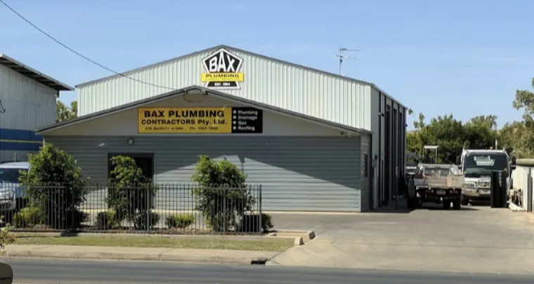

Contact us
The quickest way to reach us is by phone.
- Phone
- 0450 484 468
- Yard
- 37A Barkly Highway
Miles End QLD 4825
Open in Google Maps - Hours
- Monday to Friday, 7 am – 5 pm
Closed weekends
After-hours call-outs for emergencies - Bax Plumbing on Facebook

When you call
Tell us what’s happening, where you are and how urgent it is. If it’s a gas smell or water that won’t stop, say so first and we’ll prioritise it.